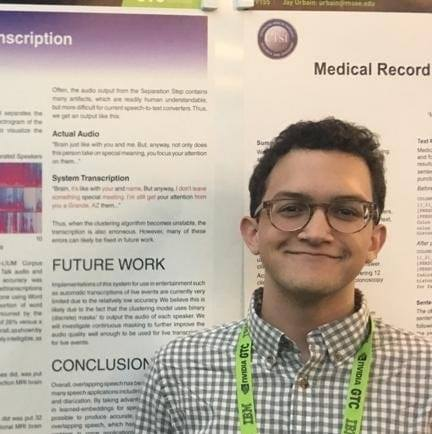
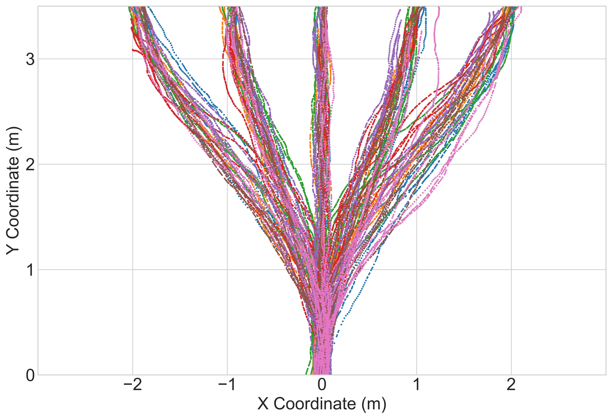
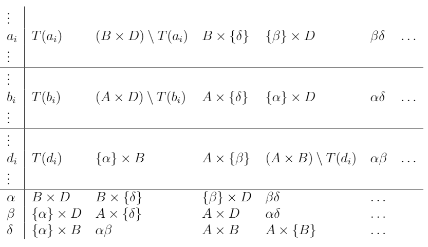
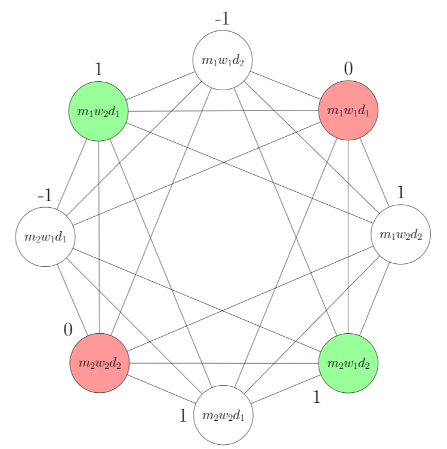
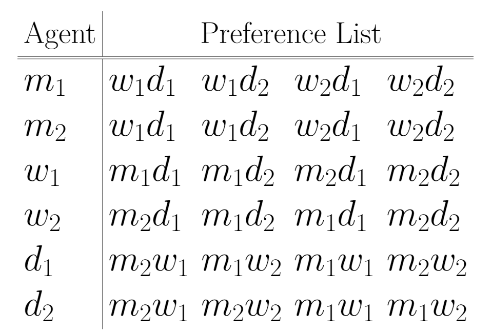
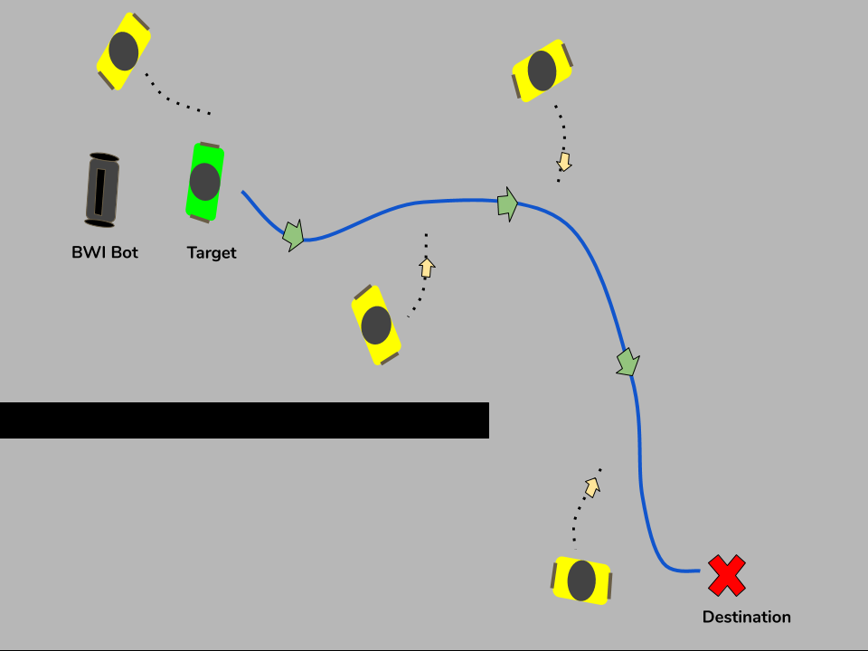

Blake HolmanI'm Blake, a first-year PhD student in computer science at Purdue University! I am broadly interested in cryptography and theoretical computer science. Currently, I'm researching the classical and post-quantum security of memory-hard functions with my advisor Jeremiah Blocki. I'm grateful to be supported by the Ross Fellowship at Purdue for the 2021-2022 academic year and the Ford Foundation Predoctoral Fellowship starting Fall 2022.Prior to joining Purdue, I studied computer science and mathematics at the University of Texas at Austin as a Ronald E. McNair Scholar. At UT I worked with Greg Plaxton on three-dimensional stable marriage and conducted research as a part of the Building-Wide Intelligence Project with Justin Hart. |
 |
Research |

|
Sustained Space and Cumulative Complexity Trade-offs for Data-Dependent Memory-Hard FunctionsBlake Holman CRYPTO (under review), 2022 paper |
|  |
Watch Where You're Going! Gaze and Head Orientation as Predictors for Social Robot NavigationBlake Holman, Abrar Anwar Akash Singh, Mauricio Tec, Justin Hart, Peter Stone International Conference on Robotics and Automation, 2021 Leverage virtual reality to collect gaze and position data to create a predictive model and a mixed effects model to show gaze orientation precedes other features |
|  |
Popularity in Three-Dimensional Stable MarriageBlake Holman Ronald E. McNair Scholar Journal, 2020 paper Proved the hardness of problems related to popularity in Three-Dimensional Stable marriage, gave structural results for the relationship between popularity and stability, and gave two graph theoretic problems that are equivalent to popularity testing. |
|  |
The Relationship Between Three-Sided Popularity and StabilityBlake Holman UCLA Ronald E. McNair Conference, 2020 poster Showed the structural relationship between popularity and stability in Three-Dimensional Stable Marriage in contrast to the two-sided case. |
|  |
The Hardness of Popularity in Three-Dimensional Stable MarriageBlake Holman Baylor University Ronald E. McNair Conference, 2020 poster Showed that deciding whether an instance of Three-Dimensional Stable Marriage with Ties admits a popular matching is NP-hard. |
|  |
Active Tracking and Re-Identification for Mobile Robot Person FollowingParth Chonkar, Pranav Varanasi, Joseph Moyalan, Nevyn Duarte, Blake Holman, Nick Wille, Haresh Karnan, Justin Hart UT Undergraduate Research Forum (Best Computer Science Poster), 2020 poster Used the Triple-loss metric for person following and reidentification. |

|
Using Human-Inspired Signals to Disambiguate Navigational IntentionsAbrar Anwar, Blake Holman, Connor Sheehan, Jeffery Huang UT Undergraduate Research Forum, 2020 poster Specific navigational cues are used to study how users interact with various signals on our BWIBots in a hallway scenario. |
{kind=link}
|
Design and source code from Jon Barron's website |